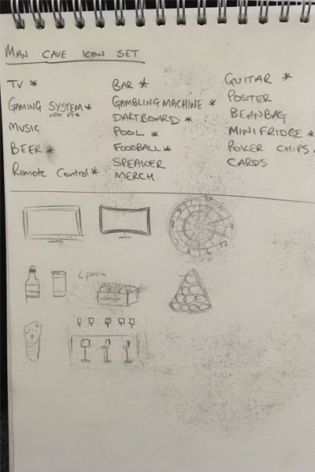

So for this task we had to make a set of 12 icons of a theme of our choice. after much thought I decided to go for a mancave icon set. I done this for the simple reason of I thought it would look good having all the cool items that you may find in a mancave.
Here are a few pages from my note pad showing my process from mind map to sketches.
This is my icons made out in illustrator. Click here to see the full set of icons.